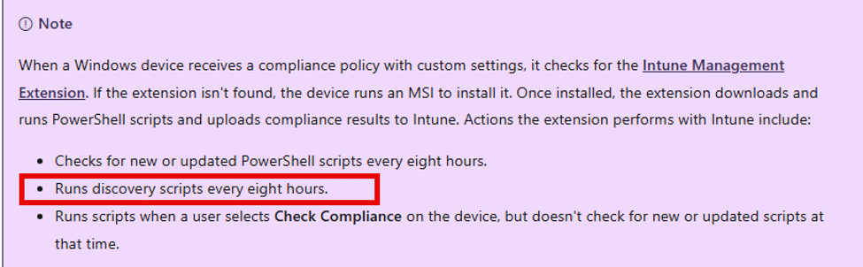
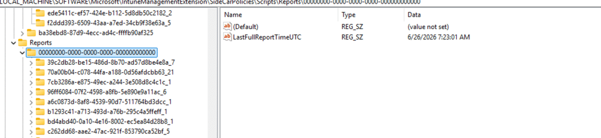
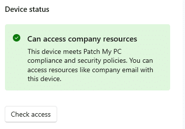
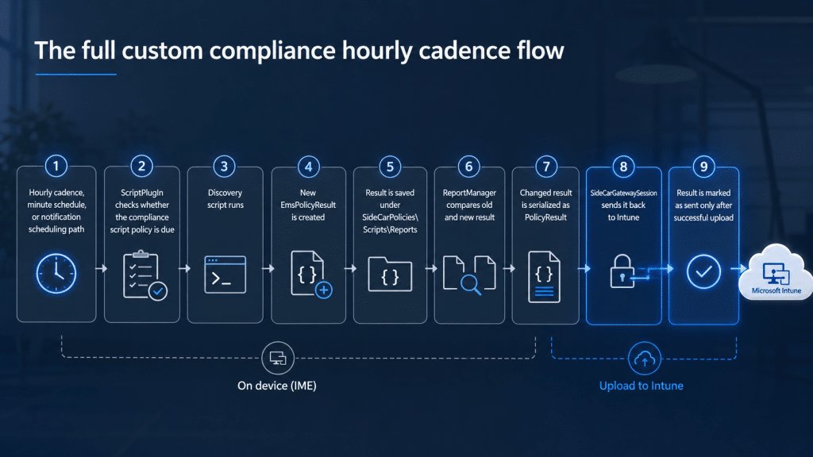

Custom compliance policies in Intune can be pretty powerful, but waiting up to 8 hours for a fresh result has always been a big pain point for security. The Intune Management Extension 1.103.101.0 appears to add new scheduling that could finally make the famous 8-hour compliance window much shorter.
Introduction
Custom compliance Policies in Intune are one of those features that give you a lot of freedom, but it also comes with one painful delay. Microsoft documents that the Intune Management Extension checks for new or updated custom compliance PowerShell scripts every 8 hours, runs discovery scripts every 8 hours, and can run the already-downloaded script when a user selects Check Compliance.


The same documentation also states that push notifications cannot trigger custom compliance to run on demand.
That explains the behavior many of us have seen. A device setting change that is checked with a custom compliance policy, but Intune is still evaluating the previous script result. The device might already be fixed or already be broken, but the custom compliance policy does not know that until the discovery script runs again and the result is uploaded.
Microsoft also notes this in the custom compliance policies troubleshooting section: after an issue is fixed on a device, it can take up to 8 hours for the noncompliant status to show as compliant again.

The Old Custom Compliance 8-hour Problem
I ran into this years ago with a custom compliance policy that checked BitLocker. The discovery script returned the BitLocker state as JSON. Intune evaluated that JSON against the custom compliance rule. That part worked fine.
The annoying part came after the local state changed. When BitLocker was disabled after the device had already reported a compliant result, the device could keep showing as compliant for a while. The old result was still cached locally by the Intune Management Extension, and Intune could only evaluate the last result it had received. The cache lived under the IME script report area: HKLM\SOFTWARE\Microsoft\IntuneManagementExtension\SideCarPolicies\Scripts\Reports


The workaround was to force a script state reset, restart the IME, or trigger a compliance sync from the company portal.


That worked, but it was clearly a workaround for the slower custom compliance cadence. Besides that… is the user really going to click the check access button after his device became non-compliant? I don’t think so…
Custom Compliance Policies Cadence Has Changed
In version 1.103.101.0 of the IME, Microsoft appears to have added new scheduling plumbing for custom compliance scripts. The interesting part is not just that a powershell script can run. The important part is that the client now contains controlled hourly cadence for the compliance script workload, and the reporting path still sends the updated result back to Intune.
The corrected diff from 1.101.111.0 to 1.103.101.0 shows new custom compliance scheduling paths in AgentCommon.dll and ScriptPlugIn.dll, EnableHourlyComplianceScriptCadence,

That tells us Microsoft did not only tweak a timer somewhere. They added a more flexible scheduling model around the script plugin.
The Full Custom Compliance Hourly Cadence flow
The IME binaries show that the script result still goes through the normal report path. The script plugin creates or updates a local policy result, compares it with the previous result, serializes the changed result as a PolicyResult, and sends it through the SideCar gateway session.

The flow looks like this:


Hourly cadence, minute schedule, or notification scheduling path
|
ScriptPlugIn checks whether the compliance script policy is due
|
Discovery script runs
|
New EmsPolicyResult is created
|
Result is saved under SideCarPolicies\Scripts\Reports
|
ReportManager compares the old and new results
|
The changed result is serialized as PolicyResult
|
SideCarGatewaySession sends it back to Intune
|
Result is marked as sent only after successful upload
Why This Could Improve the Eight-Hour Problem
The old Custom Compliance behavior was simple: if the discovery script did not run again, Intune kept evaluating stale data. The new behavior gives IME a way to process the compliance script workload more often when the feature is enabled. If the script output changes, the new result can be sent back to Intune via the existing PolicyResult path. For a BitLocker custom compliance policy, that means this old flow could become the new, improved/faster flow

That does not make custom compliance instant. But reducing the stale window from “up to eight hours” to something closer to “up to one hour” would already be a big improvement.
Conclusion
This looks like Microsoft is improving one of the most frustrating parts of custom compliance. The old behavior was not that custom compliance was broken. It was that the script result could become stale, and Intune had to wait for the next discovery cycle before it could evaluate the new state.
IME 1.103.101.0 appears to add a controlled hourly custom compliance cadence, minute schedule handling, and notification scheduling plumbing for the compliance script workload. More importantly, the result still flows through the normal PolicyResult upload path.
So this does not silently press the Company Portal Check Compliance button. It gives IME its own faster way to rerun the custom compliance script workload and report the new result back to Intune. For now, I would call it client-side plumbing until Microsoft updates the public documentation or the behavior is confirmed across tenants. But the direction is clear: custom compliance no longer appears limited to the old eight-hour waiting game inside the IME client.